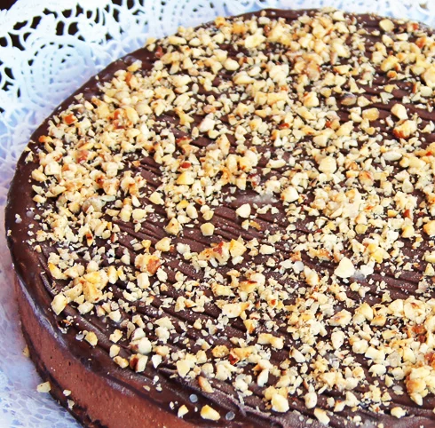
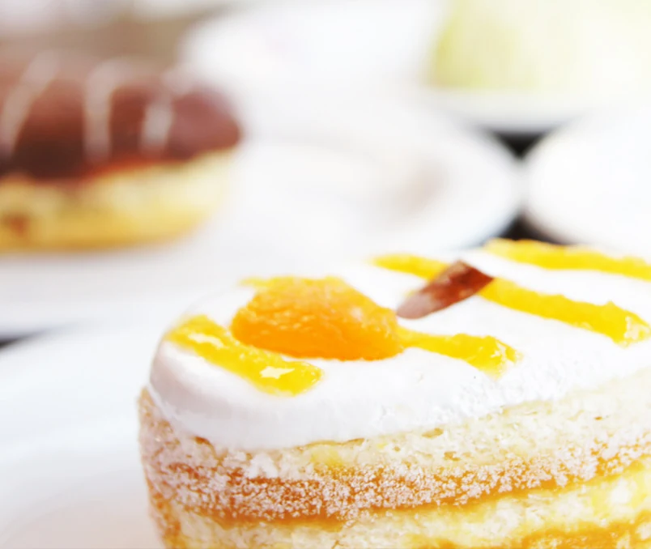
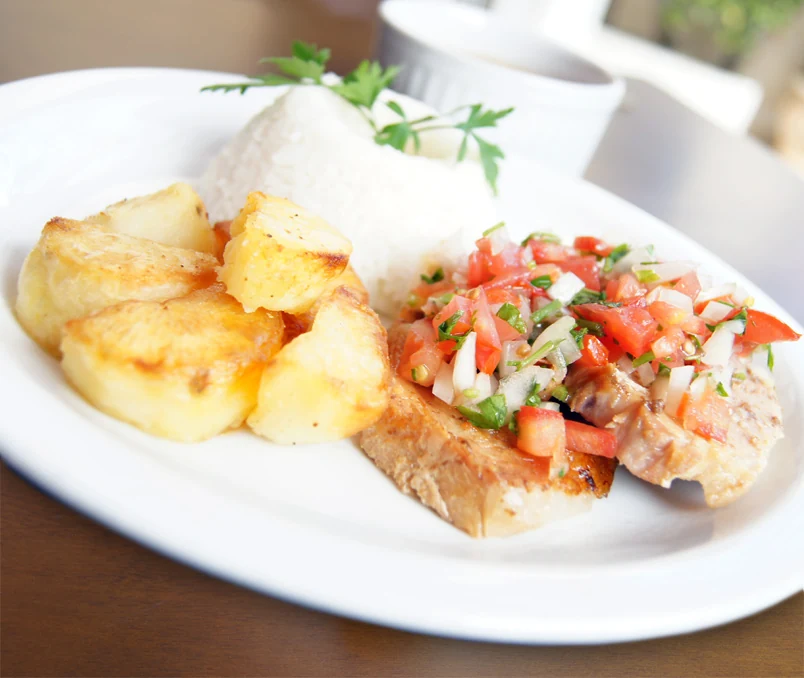
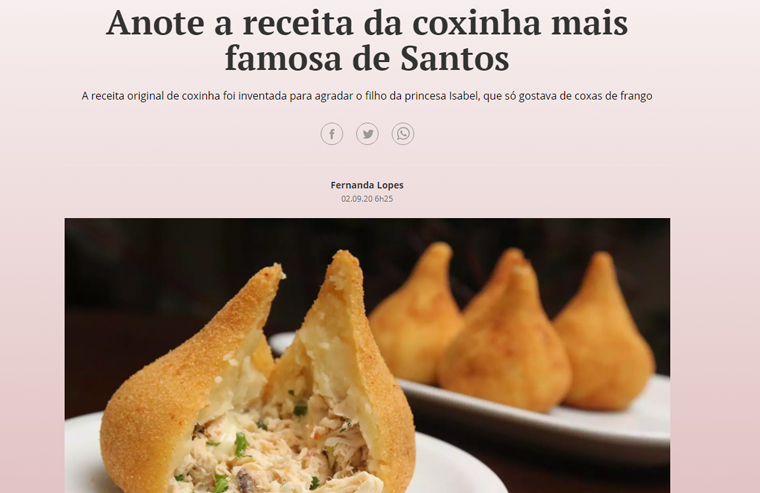
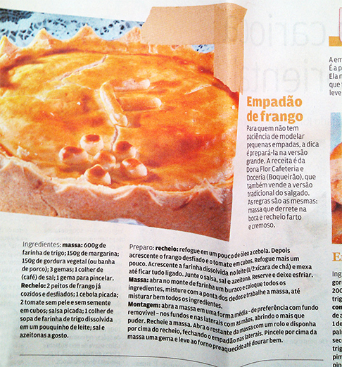
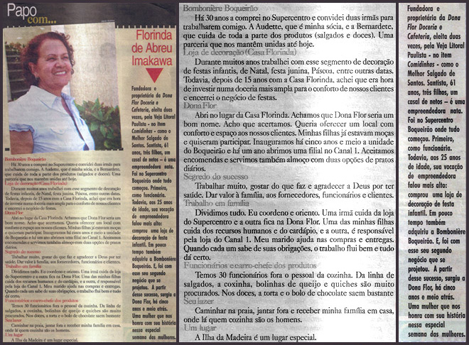
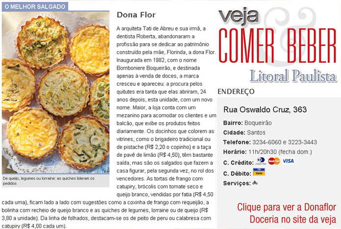
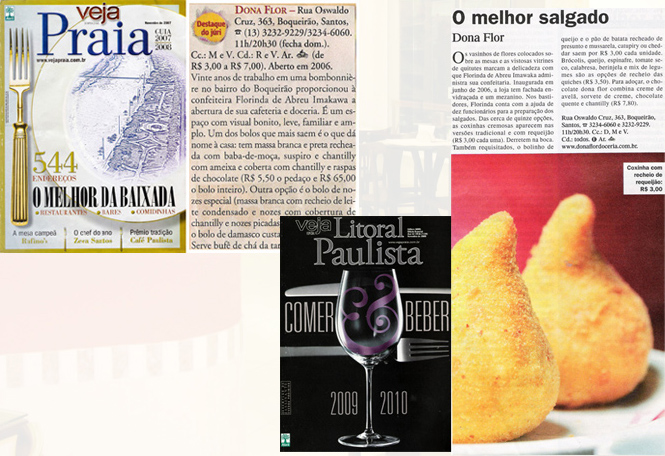
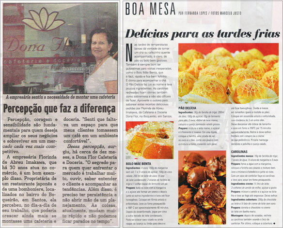

Unidade 01
Boqueirão
Rua Oswaldo Cruz, 363Boqueirão · Santos, SPComo chegar
Tradição em Santos
Doces, salgados, cafés e almoço. Sabores feitos para reunir pessoas — com uma história que começou em 1982.



Nossa essência
Em 1982, três irmãs deram início a essa trajetória com a antiga Bomboniere Boqueirão. Com dedicação à qualidade e carinho pelo que fazem, construíram a história que hoje conhecemos como Dona Flor.
A cafeteria e doceria reúne uma variedade de doces, salgados e cafés para diferentes momentos do dia — em um ambiente que valoriza a convivência.
Venha nos visitarNosso universo de sabores
Conheça algumas das delícias que fazem parte do catálogo da Dona Flor. Consulte a disponibilidade antes de fazer seu pedido.
Encontre seu favorito
Explore nossa seleção de doces, salgados e cafés. Para informações sobre ingredientes, tamanhos, preços e disponibilidade, fale com a equipe.
Tem alguma restrição alimentar? Consulte nossa equipe para saber quais opções atendem às suas necessidades.
Conheça nossos produtos e consulte a disponibilidade pelos telefones das unidades.
Na hora do almoço
O almoço também faz parte da experiência Dona Flor. Os pratos e valores podem mudar, então confira a programação confirmada antes de escolher.
Consulte diretamente a unidade para confirmar o cardápio, os preços e a disponibilidade.
Ligar para o BoqueirãoSabores em imagens
Doces, cafés e refeições para momentos especiais.
Onde encontrar a Dona Flor
Encontre nossos endereços e telefones. Para saber os horários de atendimento, fale com a unidade.
Consulte o atendimento por telefone antes de visitar.
Como chegarSeu próximo momento especial
Entre em contato com a doceria para informações sobre pedidos e atendimento.
Para encomendas e informações sobre atendimento, entre em contato com a unidade de sua preferência.
Fale conosco
Sugestões, dúvidas ou reclamações. Para pedidos e atendimento imediato, ligue para a unidade.
Uma história de sabor
Reportagens e registros que fazem parte da nossa história.

A coxinha da Dona Flor Ampliar em nova aba
Na imprensa em 2014 Ampliar em nova aba
Dona Flor na imprensa Ampliar em nova aba
Dona Flor na imprensa Ampliar em nova aba
Dona Flor na imprensa Ampliar em nova aba
Dona Flor na imprensa Ampliar em nova aba